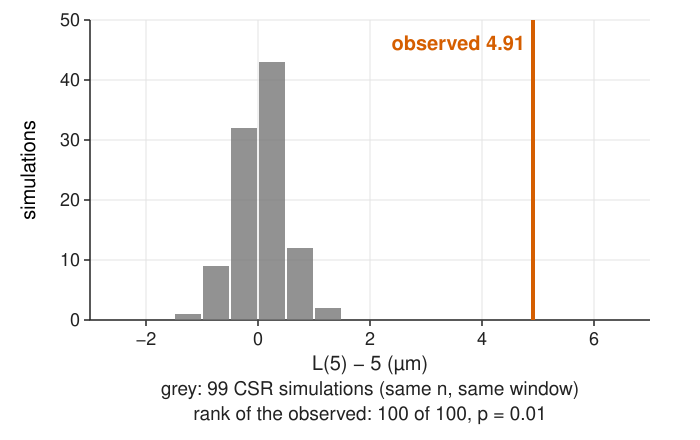
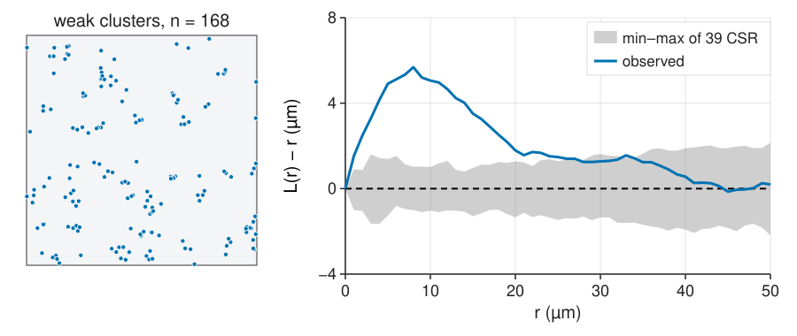
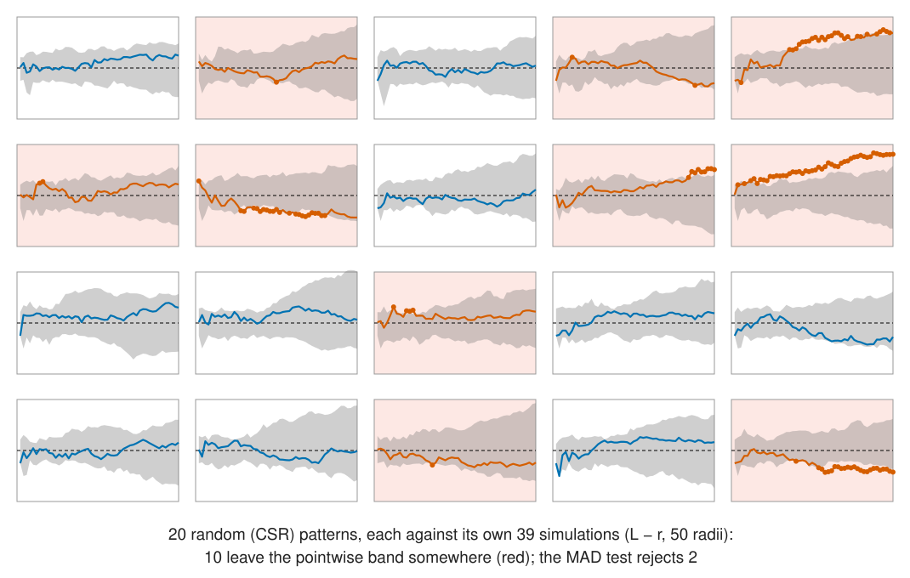
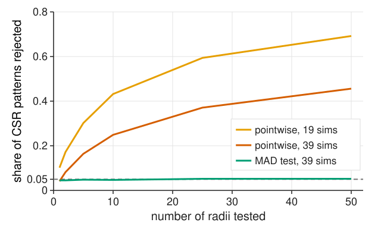
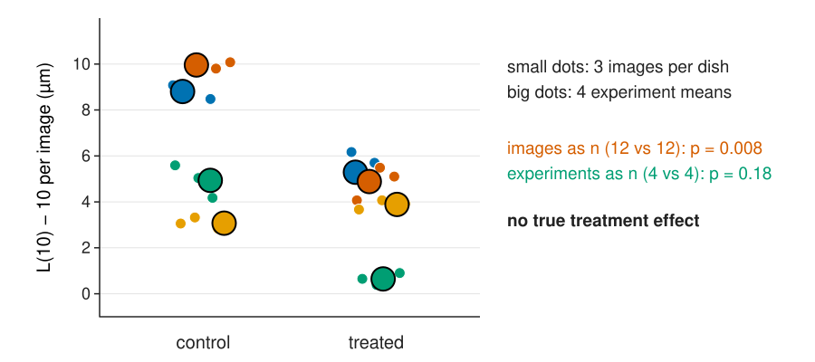

An observed L(r) - r is never exactly 0. How far can it stray by chance?
Simulate CSR with the same n in the same window, compute the same curve: the null distribution by simulation.
The Monte Carlo p-value at one pre-chosen r.
The pointwise envelope, and the trap of reading it at many r at once.
Global tests: one number for the whole curve (the MAD test), and the global envelope.
What a significant result means, and what it does not.
Comparing conditions: one summary per image, experiments as n.
Slides titled The math give the formulas and proofs; the ideas are complete without them.
What would chance give?

Simulate CSR with the same n in the same window, and compute the same curve with the same edge correction.
Repeat, say 99 times (seeded).
Compare the observed value with the simulated ones.
The null distribution is drawn, not derived: this works for any function, any window shape, any correction. Recall the randomisation tests of colocalisation.
The Monte Carlo p-value
For one pre-chosen r (say 5 µm):
p = \frac{1 + \#\{\text{simulations at least as extreme as the observed}\}}{1 + \text{number of simulations}}.
Previous slide: the observed 4.91 is larger than all 99: p = 1/100 = 0.01, the smallest possible with 99 simulations. With 19 simulations the smallest is 0.05.
Two-sided: double the smaller of the two one-sided p-values.
No formula, no normality: valid because, if the pattern is CSR, the observed and the simulated values are exchangeable.
The “+1” counts the observed pattern itself as one of the possible outcomes.
The math: Monte Carlo tests
Let T_0 be the statistic of the data and T_1, \dots, T_s those of s simulations from H_0.
Under H_0 the s + 1 values are exchangeable (and, with continuous values, distinct with probability 1), so the rank of T_0 among them is uniform on \{1, \dots, s + 1\}.
Hence P(\text{rank from the top} \le k) = k/(s + 1): rejecting when T_0 is among the k largest has level exactly k/(s + 1) (Barnard 1963). Ties: break at random, or count them against H_0 (conservative).
Composite null: ρ is estimated from the data. Conditioning on n (simulate exactly n points) removes it; the test is then exact for the binomial process and slightly conservative otherwise.
More simulations do not change the level; they make the p-value less coarse and the test a little more powerful.
The pointwise envelope

At every r: the min and max of the simulated curves form a grey band. The picture in almost every paper (and in the cross-L tab of object colocalisation). At one r, with 39 simulations, leaving it has probability 2/40 = 5 % under CSR.
The trap: many r at once

Reading “the curve leaves the band somewhere” as significant is a multiple test: one test per r. Here 10 of 20 random patterns “escape”.
How often is CSR rejected?

1000 random patterns of 100 points each, L - r at up to 50 radii:
pointwise band of 39 simulations, 25 radii: 37 % of random patterns rejected;
19 simulations (a 10 % band per r): 59 %;
the MAD test (next slide): 5 %, at any number of radii.
Choose the r range in advance. Summarise the whole curve by one number, the maximum absolute deviationT = \max_r |\hat L(r) - r|, and rank it among the simulations’ T values. One test, the right error rate. Here: T = 1.56, rank 31 of 40, p = 0.25.
The global envelope
The global envelope is the band 0 \pm T_\text{crit}, with T_\text{crit} the 2nd largest of 39 simulated T values (the largest of 19; the 5th of 99).
A curve that leaves the global envelope is significant at 5 %, and where it leaves tells at which scale.
It is wider than the pointwise band: that is the price of looking at all r.
Alternatives: the integrated squared deviation (DCLF test), more powerful when the departure is spread over many r; the rank envelope (Myllymäki et al., 2017), which adapts the width to each r.
The math: global error and the MAD test
A two-sided min/max envelope of s simulations at one r has level 2/(s + 1): 0.05 for s = 39, 0.10 for s = 19.
Over m radii the events are dependent (neighbouring r share most pairs), so the global rate lies between the pointwise level and 1 - (1 - \alpha)^m (m = 25: between 5 % and 72 %); only simulation tells (37 %).
MAD: T = \max_{r \in [r_1, r_2]}|\hat L(r) - r|; reject if T_0 is among the \lfloor\alpha(s + 1)\rfloor largest of T_0, \dots, T_s. Exact by the rank argument.
DCLF: T = \int_{r_1}^{r_2}(\hat L(r) - r)^2\,dr.
Use the deviation from the theoretical curve (or from the mean of a separate set of simulations); L rather than K, because its variance is more even across r.
Try it: envelopes
What a significant result means
Only “not CSR”. It does not say:
whether points interact or the intensity is uneven (unit 5);
which model fits (fit one and test it the same way).
With enough points, CSR is rejected for almost any real tissue. Report how (above or below) and at which r, with an effect size: L − r at its peak, g at its peak, the number of extra neighbours within the cluster radius (\rho\,(K(r) - \pi r^2)).
Envelopes are not confidence bands: the grey band describes the null, not the uncertainty of the observed curve. That needs replicates (next slide).
Fix before looking: function, r range, correction, number of simulations, window. Changing them until p < 0.05 is tuning on the test set (leakage).
Comparing conditions

The points of one image are not independent observations of a treatment, and neither are the images of one dish.
One summary per image (e.g. L(r_0) - r_0 at a pre-chosen r_0, or the area between L - r and 0 over the chosen range).
Average per experiment, test across experiments: the recipe of replicates.
Here, with no treatment effect: images as n give p = 0.008, experiments as n p = 0.18.
The math: pooling replicate images
Several images k = 1, \dots, m of one condition, with n_k points and estimates \hat K_k:
\hat K_k is a ratio of a pair count (about n_k^2 pairs) to n_k^2; weighting by n_k^2 is the ratio of the summed pair counts to the summed normalisers, so images with more pairs count more.
An image of 200 points gets 16 times the weight of one with 50.
The pooled curve is better, not “more n”: the test across conditions still has the experiments as its unit (Diggle, Mateu & Clough, 2000).
Between-image variation of \hat K_k estimates the uncertainty of \bar K; a bootstrap over images (not over points) gives a confidence band.
Try it: conditions
Where this leads
Unit 5: other nulls for other questions: two cell types (independence or random labelling) and an uneven density (inhomogeneous Poisson).
The same simulation logic in time: the mean squared displacement of tracks against a random walk.
The full statistics of experiments (unit of replication, confidence intervals, multiple comparisons): the evaluation day.
Summary
Null distribution by simulation: same n, same window, same function and correction.
Monte Carlo p-value at one r: (1 + \#\text{as extreme})/(1 + s); smallest 1/(s + 1).
The pointwise envelope at many r is a multiple test: 37 % of random patterns escape a 39-simulation band over 25 radii.
Global tests (MAD, DCLF) and the global envelope keep 5 %; fix the r range in advance.
Significant means “not CSR”; report how, where, and how much. Envelopes are not confidence bands.
Comparing conditions: one summary per image, experiments as n.